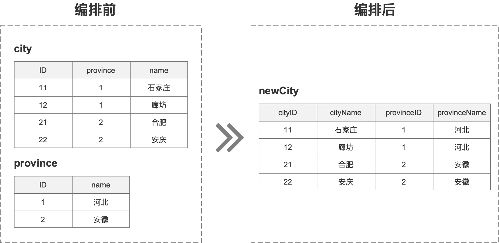

从0到1搭建一个应用
为了更直观的感受在线联调工具是怎么使用的，我们将带大家从0到1搭建一个项目。
该项目的主要功能如下图所示：

如上图：有2个接口，分别是查询city接口和查询province接口，现在需要将2个接口合并成一个新的接口
- 查询city接口为 http://jap-mock-data.jd.local/city/{cityId} ,查询city返回结果里的province字段用来查询省份信息,你可以在浏览器里地址栏输入http://jap-mock-data.jd.local/city/11 查看结果
- 查询province接口为 http://jap-mock-data.jd.local/province/{province} 你可以在浏览器里地址栏输入http://jap-mock-data.jd.local/province/1 查看结果
开发
接口录入
录入city接口和province接口
出参格式分别为： 城市信息：
{
"status": 0,
"msg": "获取成功",
"data": {
"id": 11,
"province": 1,
"name": "石家庄"
}
}
对应的录入界面如下：
省份信息:
{
"status": 0,
"msg": "获取成功",
"data": {
"id": 1,
"name": "河北"
}
}
录入环境信息
调试验证
分别调试city、province接口，city id传入11,province id传入1，验证没有问题后，接口完成录入
编排
入参录入
进入编排页面，右键流程编排节点，录入入参cityId
编排city步骤
新增http步骤，并选择刚才录入的city方法，录入映射信息，映射信息为：${workflow.input.params.cityId}，意思是将流程的cityId属性映射到当前节点
编排province步骤
在city下面新增http步骤，选择刚才录入的province方法，录入映射信息，映射信息为:${steps.queryCity.output.body.data.province}，意思是将queryCity步骤的出参的http请求体的data节点下的province映射到当前province上
出参录入
右键流程编排，打开参数录入抽屉：
录入出参：
{
"code": 0,
"mesage": "获取成功",
"data": {
"cityId": "${workflow.input.params.cityId}",
"cityName": "${steps.queryCity.output.body.data.name}",
"provinceId": "${steps.queryCity.output.body.data.province}",
"provinceName": "${steps.queryCity.output.body.data.province}"
}
}
调试
保存流程编排，并在调试页面输入11，查询调用结果

总结
以上就完成了一个简单流程的编排工作,关于参数映射，你可以参考：参数映射
也可以看下熟悉下流程编排的基础概念：流程编排
也可以将刚才编排的结果导入到系统中实际体验一下，编排结果在下面
编排结果导入
整个流程编排结果如下，可以直接将此结果导入到流程编排里体验一下
{"name":"流程编排","type":"Program","children":[{"id":"queryCity","type":"http","key":"6Mvhf7","input":{"url":"/city/{id}","method":"GET","reqType":"form","params":[],"headers":[],"path":[{"name":"id","value":"${workflow.input.params.cityId}","exprType":"expr","type":"string"}],"body":[],"script":null,"preProcess":null},"output":{"headers":[],"body":[{"name":"root","type":"object","children":[{"name":"status","type":"double"},{"name":"msg","type":"string"},{"name":"data","type":"object","children":[{"name":"id","type":"double"},{"name":"province","type":"double"},{"name":"name","type":"string"}]}]}],"script":null},"env":"线上环境","endpointUrl":["http://jap-mock-data.jd.local"],"successCondition":null,"taskDef":{"timeout":0,"fallbackStrategy":"stop","fallback":null},"name":"city","entityId":34,"interfaceID":2},{"id":"queryProvince","type":"http","key":"i69S2u","input":{"url":"/province/{id}","method":"GET","reqType":"form","params":[],"headers":[],"path":[{"name":"id","value":"${steps.queryCity.output.body.data.province}","exprType":"expr","type":"string"}],"body":[],"script":null,"preProcess":null},"output":{"headers":[],"body":[{"name":"root","type":"object","children":[{"name":"status","type":"double"},{"name":"msg","type":"string"},{"name":"data","type":"object","children":[{"name":"id","type":"double"},{"name":"name","type":"string"}]}]}],"script":null},"env":"线上环境","endpointUrl":["http://jap-mock-data.jd.local"],"successCondition":null,"taskDef":{"timeout":0,"fallbackStrategy":"stop","fallback":null},"name":"province","entityId":35,"interfaceID":2}],"tasks":[{"id":"queryCity","type":"http","key":"6Mvhf7","input":{"url":"/city/{id}","method":"GET","reqType":"form","params":[],"headers":[],"path":[{"name":"id","value":"${workflow.input.params.cityId}","exprType":"expr","type":"string"}],"body":[],"script":null,"preProcess":null},"output":{"headers":[],"body":[{"name":"root","type":"object","children":[{"name":"status","type":"double"},{"name":"msg","type":"string"},{"name":"data","type":"object","children":[{"name":"id","type":"double"},{"name":"province","type":"double"},{"name":"name","type":"string"}]}]}],"script":null},"env":"线上环境","endpointUrl":["http://jap-mock-data.jd.local"],"successCondition":null,"taskDef":{"timeout":0,"fallbackStrategy":"stop","fallback":null},"name":"city","entityId":34,"interfaceID":2},{"id":"queryProvince","type":"http","key":"i69S2u","input":{"url":"/province/{id}","method":"GET","reqType":"form","params":[],"headers":[],"path":[{"name":"id","value":"${steps.queryCity.output.body.data.province}","exprType":"expr","type":"string"}],"body":[],"script":null,"preProcess":null},"output":{"headers":[],"body":[{"name":"root","type":"object","children":[{"name":"status","type":"double"},{"name":"msg","type":"string"},{"name":"data","type":"object","children":[{"name":"id","type":"double"},{"name":"name","type":"string"}]}]}],"script":null},"env":"线上环境","endpointUrl":["http://jap-mock-data.jd.local"],"successCondition":null,"taskDef":{"timeout":0,"fallbackStrategy":"stop","fallback":null},"name":"province","entityId":35,"interfaceID":2}],"taskDef":null,"input":{"headers":[],"params":[{"name":"cityId","exprType":"expr","type":"string"}],"reqType":null,"body":[],"preProcess":null},"output":{"headers":[],"body":[{"name":"root","exprType":"expr","type":"object","children":[{"name":"code","value":"0","exprType":"expr","type":"string"},{"name":"message","value":"获取成功","exprType":"expr","type":"string"},{"name":"data","exprType":"expr","type":"object","children":[{"name":"cityId","value":"${workflow.input.params.cityId}","exprType":"expr","type":"string"},{"name":"cityName","value":"${steps.queryCity.output.body.data.name}","exprType":"expr","type":"string"},{"name":"provinceId","value":"${steps.queryCity.output.body.data.province}","exprType":"expr","type":"string"},{"name":"provinceName","value":"${steps.queryProvince.output.body.data.name}","exprType":"expr","type":"string"}]}]}],"script":null,"empty":false},"failOutput":{"headers":[],"body":[{"name":"root","exprType":"expr","type":"object","children":[]}],"script":null,"empty":false}}